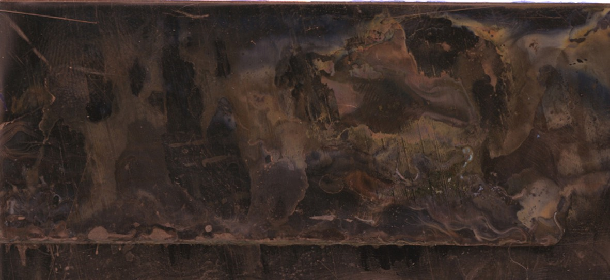
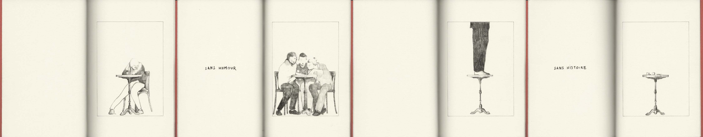
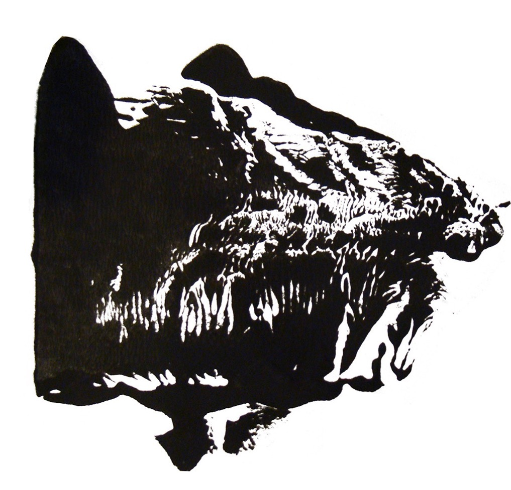

Il y a deux sortes d’artistes : ceux qui chiadent le titre, commencent là, y passent des heures et posent dessus une forme en équilibre ; et ceux qui s’en moquent. Selon ce qu’on pense, on dira qu’un titre oriente, précise ou perturbe, la lecture d’une œuvre ; et qu’il faut s’en réjouir, sinon s’en désoler.
Pour parler un peu de moi, je conterai une espèce où un titre eût influencé en mal, c’est-à-dire qui aurait fonctionné à emploi contraire de l’intention de son auteur, une pièce qui n’en portait aucun—ne serait-ce qu’en lui assignant un sens de lecture (qu’elle n’avait pas non plus). J’avais décidé de publier une série de planches dans un format qui produirait une lecture analogue à celle du ciel qu’on fouille pour y trouver dans les nuages une forme familière. Une lecture circulaire, attentive au détail avant l’ensemble.
La solution la plus élégante fut d’inclure à l’ouvrage, petit volume d’une douzaine de pages, un billet-avertissement sur une feuille volante qui avait cela de commode, en plus de n’être pas dépendant de la reliure, de pouvoir servir de marque-page.
qui juxtapose els vignettes Sans cul ni tête. Une lecture libre, donc ; qui comme tout événement sans début ni fin, et par cet aspect plus proche de l’infini que d’une anthologie, eût pour autre effet d’égarer les lecteurs e ne pas gagner le regard du lecteur se perdre aux yeux du lecteur et de lui faire manquer ce que je l’invitais pourtant à voir.
reproduirait l’esprit dans lequel elles avaient été produites. livre, eût pour autre effet d’égarer les lecteurs e ne pas gagner le regard du lecteur se perdre aux yeux du lecteur et de lui faire manquer ce que je l’invitais pourtant à voir.
pour éviter au lecteur de se disperser dans l’infini et de manquer ce que je l’invitais pourtant à voir
qui n’eût pour effet que de perdre le lecteur autant que ce que j’invitais à voir
point de fixation présenter // que produirait la contemplation des nuages
glisser un indice pour capter l’attention comme un papier sur la surface de l’eau
La solution la plus élégante (et il y en avait d’autres !) fut d’inclure à l’ouvrage, petit volume d’une douzaine de pages, un billet-avertissement sur une feuille volante qui avait cela de commode, en plus de n’être pas dépendant de la reliure, de pouvoir servir de marque-page.
veiller à ce que influence
Commodité marchande ou pas, le problème du sens de lecture ne se pose plus ici.
le texte gênerait presque la lecture des images
le texte en gênerait presque la lecture /// à rebours // sens contraire // revolving



